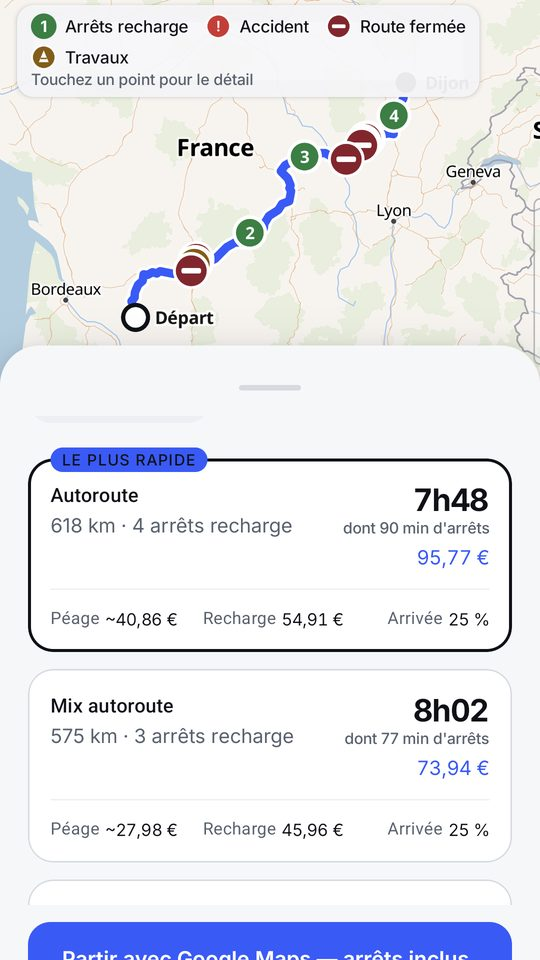

En images
Trois écrans, trois situations de tous les jours.


Wattlas planifie vos trajets en voiture électrique et vous donne la facture complète avant de partir : les recharges et le péage, au centime. Même sans réseau.
▶ Télécharger sur Google PlayGratuit · sans compte · sans publicité · Android · France

Les planificateurs chiffrent la recharge et s'arrêtent là : le péage, ils le signalent d'un pictogramme, sans montant. Exemple sur un Bordeaux → Dijon :
Et pour chaque destination, plusieurs itinéraires comparés, du tout-autoroute au sans péage. Sur ce trajet : 1 h de moins pour 36 € de plus par l'autoroute. Le choix reste le vôtre, mais avec un chiffre.
Une appli faite par un conducteur, améliorée avec les retours de ceux qui l'utilisent sur de vraies routes.
Recharge au tarif du réseau emprunté, péages au centime (les 551 gares françaises sont dans l'appli), batterie restante à l'arrivée.
Plusieurs itinéraires du tout-autoroute au tout-national, et le plus rapide pour le budget que vous vous fixez.
Avec le pack France, carte, routes, bornes et péages vivent sur le téléphone : le trajet se calcule sans une barre de signal.
Deux heures de courses ou un restaurant : les bornes à pied, ce que la batterie aura récupéré, et si c'est assez pour rentrer.
L'arrêt recharge de midi devient le repas, avec ce qu'il y a à manger à moins de 300 m.
Un appui l'écarte et recalcule le trajet sans elle. Les arrêts comptent aussi le temps de se garer et de brancher.
Après un trajet, vous notez la batterie restante : la consommation devient la vôtre, pas celle du constructeur.
Ce qu'il ne fait pas, encore : la disponibilité des bornes n'est pas remontée en direct, et les tarifs de recharge sont estimés par réseau, pas relevés borne par borne.
Trois écrans, trois situations de tous les jours.
C'est lui qui fait la différence. Sans lui, Wattlas calcule par internet et ne propose qu'un seul itinéraire, et sur un long trajet il peut ne rien proposer du tout.
Environ 3,5 Go, en Wi-Fi. L'appli le propose au premier lancement, sinon Réglages → Pack hors-ligne. Le téléchargement reprend là où il s'arrête, et se supprime d'un geste.
Des réponses chiffrées aux questions qu'on se pose avant un long trajet.
Gratuit, sans compte, sans publicité, sans achat intégré. L'appli ne vend rien et n'appartient à aucun réseau de recharge. Un calcul vous paraît faux ? Écrivez à contact@wattlas.fr.
Pas de compte, pas de publicité, pas de mouchard. Vos réglages et vos destinations restent sur votre téléphone ; en calcul en ligne, le trajet transite par le serveur de routage, sans être conservé. Avec le pack hors ligne, rien ne sort du téléphone. Politique de confidentialité.
contact@wattlas.fr — un bug, une idée, un calcul qui vous paraît faux. Les nouveautés sont annoncées sur la page Facebook.
Wattlas est une application indépendante. Elle ne représente aucune administration ni aucun organisme public, et n'est affiliée à aucun d'entre eux.